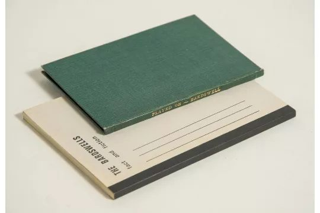
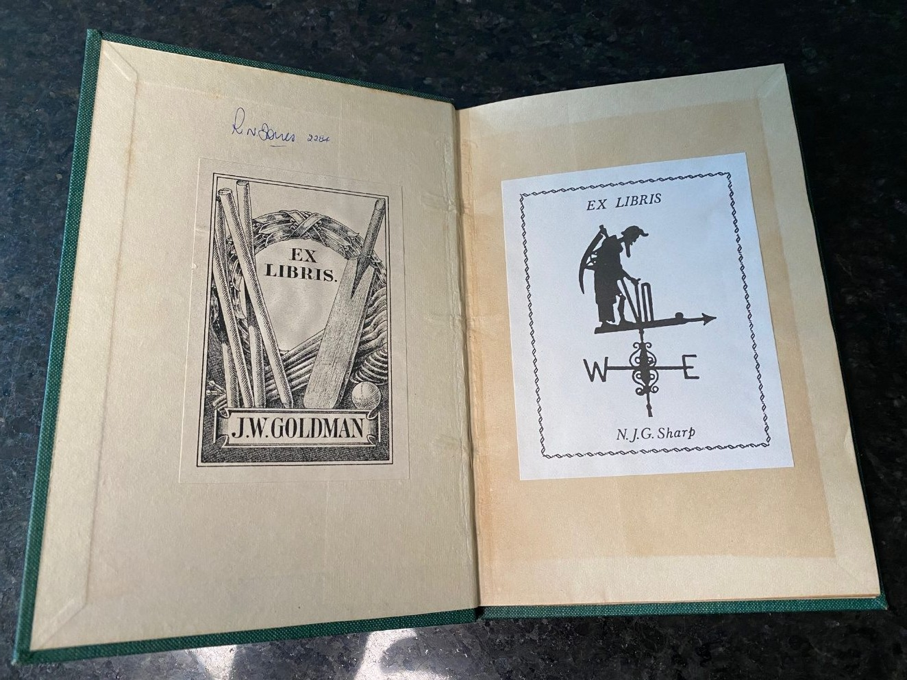
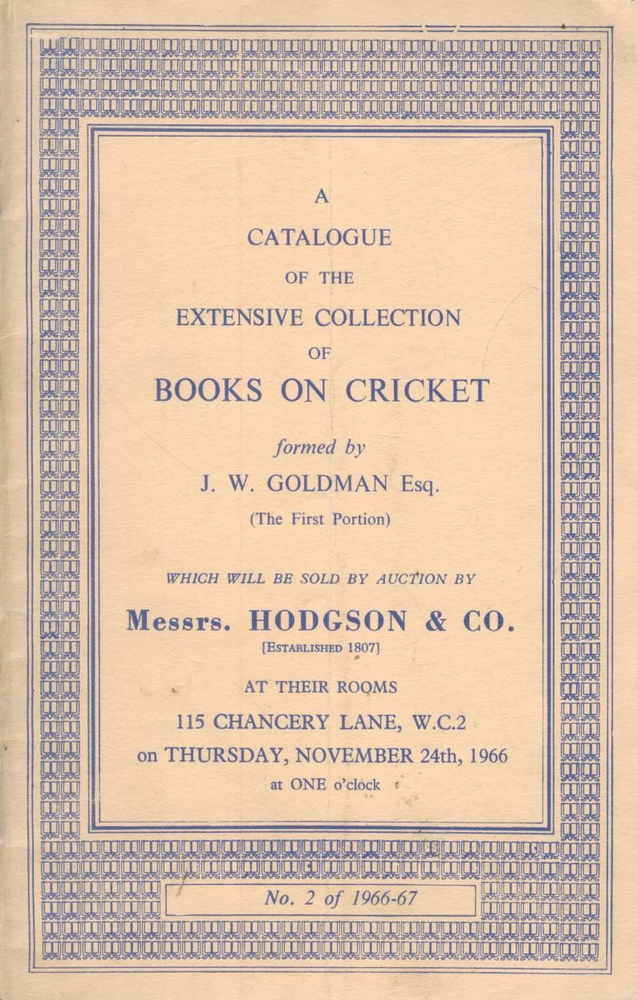
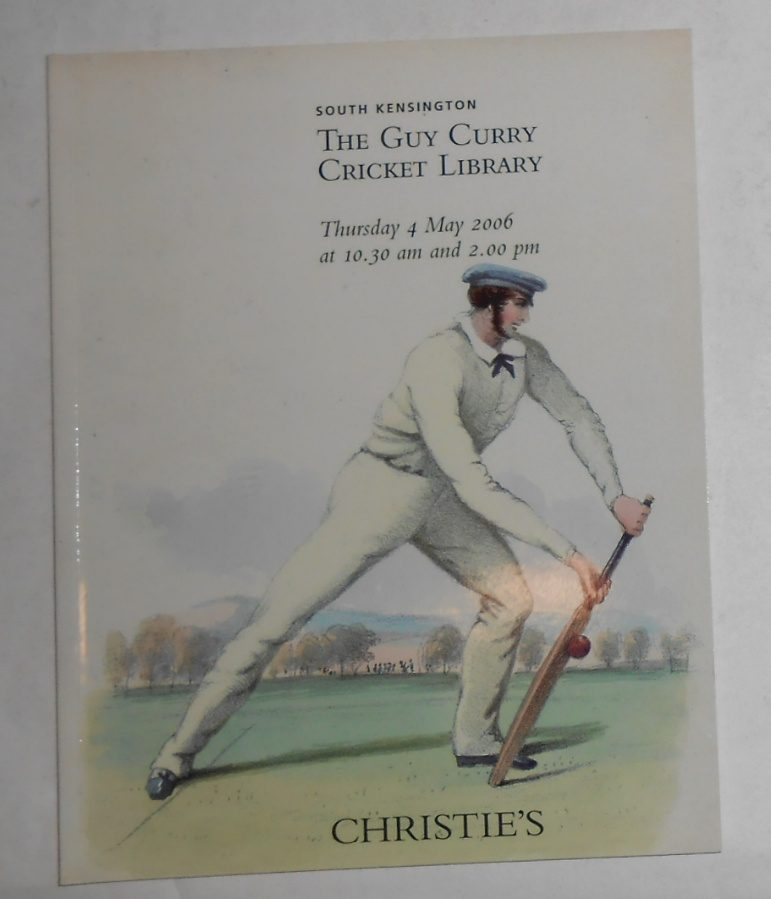
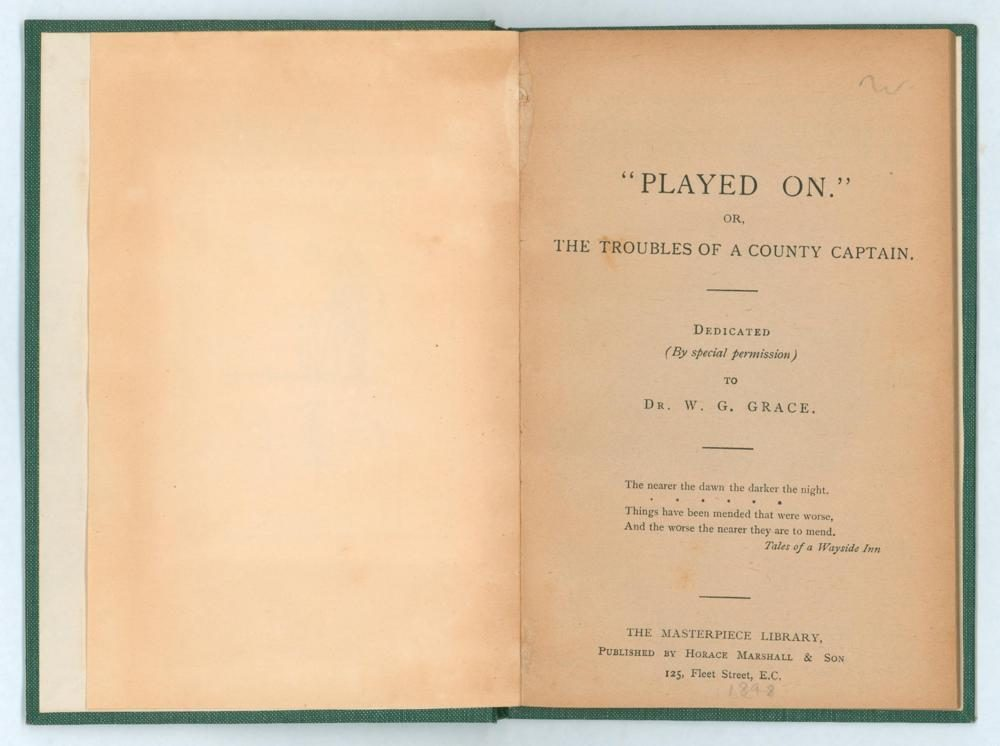
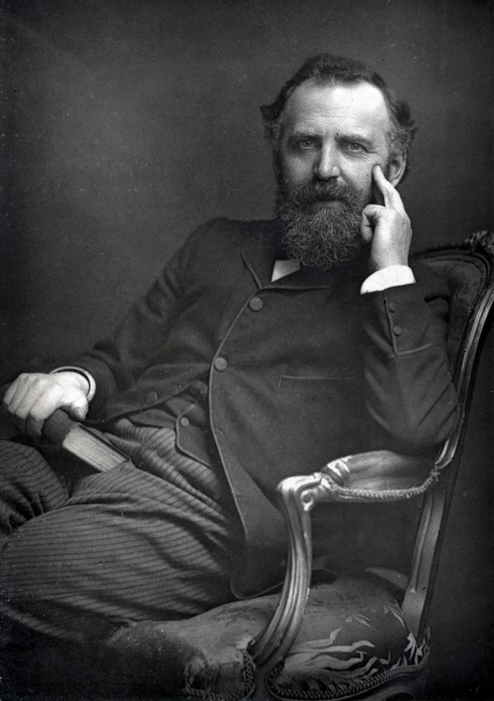
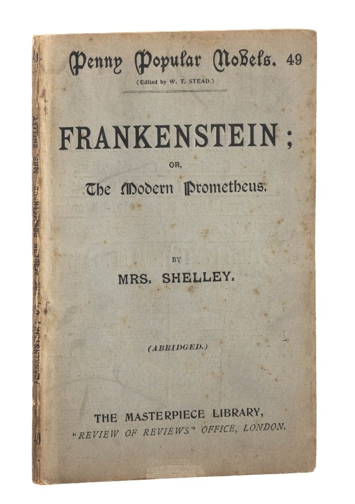
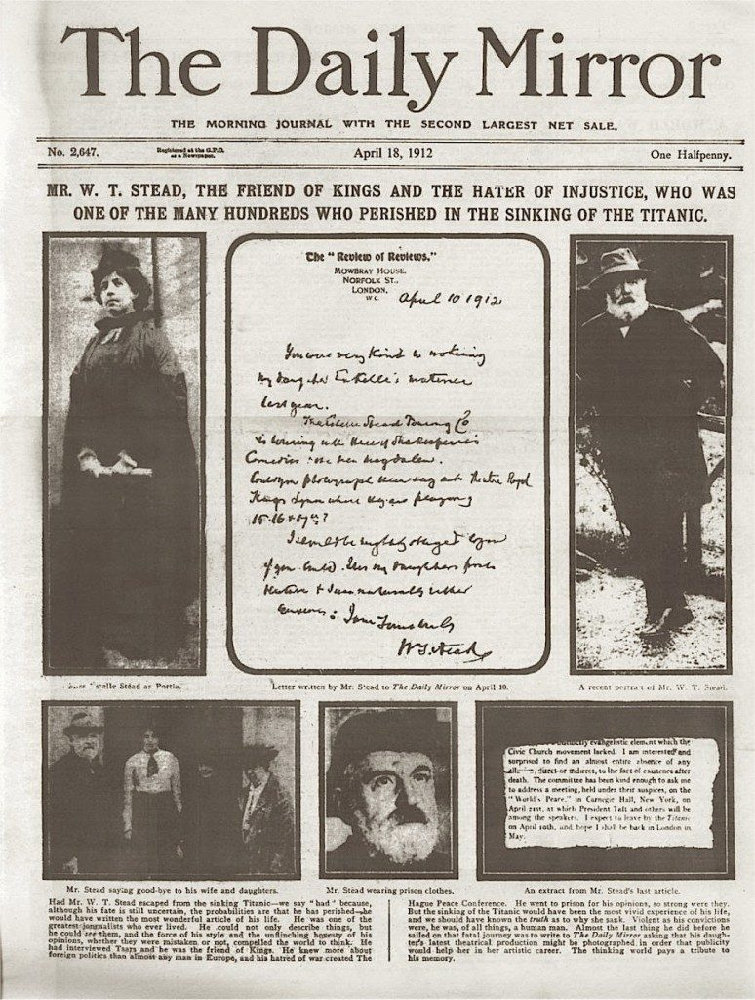

The story begins…
Lot 1651
Emily Bardswell was a fantical cricket fan and author of Played On, a comment on the social background to cricket in the 1890s, first published in 1898.
In 1979, Derek Deadman and Christopher Sheppard produced a limited edition (50 copies) book entitled The Bardswells: Fact and Fiction with a reprint of Played On.
In a recent auction by Knight’s Sporting auctions, Lot 1651 contained both.
Neal Whittle had waited years for such an opportunity and after a successful bid, the books duly arrived at his home in Sydney, Australia and a long-forgotten story spanning three centuries began to unfold.

The provenance

The bookplates inside the original copy of ‘Played On’ reveal that the book once belonged to J.W.Goldman (1895 -1978), a man who arguably curated “the finest collection of cricket books ever to be in private hands”, according to Martin Chandler.
https://www.cricketweb.net/crickets-greatest-collector/
In November 1966, the successful solicitor sold the bulk of his collection at a famous auction held in London, in November 1966.
Reknowned cricket collectors R.N.Jones (note the annotation in pen above the Goldman bookplate) and N.J.G Sharp, former Vice President of Sussex Cricket and a trustee of Sussex Cricket Museum have also owned the book.

Although it is difficult to prove, the copy is likely to have passed through the hands of another celebrated collector called Guy Curry, who sold the bulk of his collection in 2006.
When Christie's catalogued "The Guy Curry Cricket Library" in 2006, book dealers noted that Curry treated his collection with an almost museum-like reverence. When he bought books that already contained rich history, he refused to add his own name to the pages, believing his role was to protect the history already written inside them.

The link to the Christie’s catalogue for the Guy Curry Collection in 2006 reveals that Curry bought many books (including prized volume sets) that carried the explicit signature of R.N.Jones.
https://www.christies.com/en/auction/the-guy-curry-cricket-library-20717/
The Title page

The title page is noteworthy for a number of reasons.
Firstly, the author’s name does not appear under the title (as is usually the case) perhaps because the author Emily Bardswell, is a woman.
Second, the book is dedicated by special permission to W.G. Grace, a relationship that is is of considerable significance as this story unfolds.
Third, the book belonged to The Masterpiece Library, a landmark publishing venture created by esteemed social reformer W. T. Stead (1849–1912).
The Masterpiece Library


The Masterpiece Library was a bold attempt to ‘democratise reading’ by radically lowering the barriers to high culture. Stead did this through Ultra-Affordable Pricing, shattering the pricing model by selling books for just one penny each, Condensing Content by ‘Boiling Down" the Classics, ensuring time-poor victorian workers could finish them and Direct Distribution, meeting readers where they already were, distributing the Masterpiece Library through standard newsagents and railway kiosks alongside daily newspapers.
Stead structured the Masterpiece Library into The Penny Poets (1895), Penny Popular Novels (1896) and Books for the Bairns (1896) bringing literature to children of lower-income families to foster a love for books.
The Masterpiece Library was just one Stead’s many achievements.
As the youngest national newspaper editor aged 22, Stead pioneered "New Journalism” into active agents of social change, forcing Parliament to pass new laws in a relentless crusade against child exploitation, willingly going to prison for his strong opinions and forcing the government to launch a Royal Commission on slums to reduce poverty.
His hatred of war was such that he created The Hague Peace Conference and was on his way to New York at the personal invitation of the U.S. President William Howard Taft to speak at a Carnegie Hall peace congress on board RMS Titanic, and perished in April 1912.
